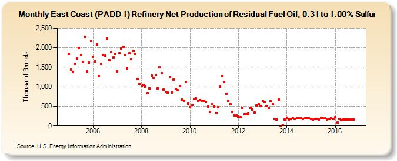

|
Download Data (XLS File) |
|
||||||||
|  | ||||||||
| East Coast (PADD 1) Refinery Net Production of Residual Fuel Oil, 0.31 to 1.00% Sulfur (Thousand Barrels) | ||||||||
| Year | Jan | Feb | Mar | Apr | May | Jun | Jul | Aug | Sep | Oct | Nov | Dec |
|---|---|---|---|---|---|---|---|---|---|---|---|---|
| 2005 | 1,837 | 1,435 | 1,377 | 1,584 | 1,731 | 1,998 | 1,810 | 1,632 | 2,284 | 1,390 | 1,618 | 2,182 |
| 2006 | 1,772 | 1,654 | 2,089 | 1,276 | 1,590 | 1,812 | 1,795 | 2,242 | 1,683 | 1,886 | 1,749 | 1,849 |
| 2007 | 1,396 | 1,860 | 1,985 | 2,029 | 1,810 | 1,471 | 1,862 | 1,708 | 1,914 | 1,842 | 1,195 | 1,071 |
| 2008 | 1,020 | 1,048 | 1,002 | 841 | 954 | 1,281 | 1,233 | 1,296 | 963 | 1,494 | 1,346 | 926 |
| 2009 | 864 | 856 | 1,239 | 858 | 1,190 | 947 | 906 | 1,021 | 671 | 637 | 1,118 | 571 |
| 2010 | 471 | 542 | 689 | 707 | 645 | 662 | 648 | 637 | 614 | 492 | 362 | 548 |
| 2011 | 485 | 323 | 474 | 1,007 | 1,278 | 1,116 | 818 | 635 | 559 | 363 | 264 | 266 |
| 2012 | 235 | 214 | 462 | 290 | 297 | 308 | 458 | 420 | 348 | 526 | 549 | 500 |
| 2013 | 630 | 618 | 503 | 443 | 632 | 550 | 177 | 158 | 671 | 3 | 12 | 154 |
| 2014 | 204 | 161 | 176 | 186 | 172 | 192 | 190 | 187 | 178 | 197 | 190 | 191 |
| 2015 | 174 | 157 | 182 | 170 | 164 | 201 | 185 | 184 | 166 | 171 | 190 | 179 |
| 2016 | 216 | 82 | 177 | 153 | 160 | 162 | 164 | 164 | 158 | 161 | 189 | |
| - = No Data Reported; -- = Not Applicable; NA = Not Available; W = Withheld to avoid disclosure of individual company data. |
| Release Date: 1/31/2017 |
| Next Release Date: 2/28/2017 |